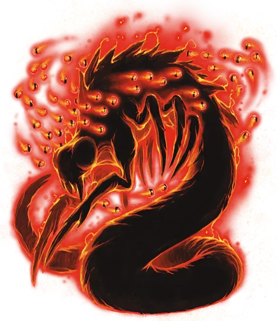

Каларак куори
Kalaraq Quori
Средняя Аберрация, законно-злая

Класс Доспеха 18 (природный доспех)
Хиты 161 (19к8 + 76)
Скорость 30 футов, летая 60 футов (парит)
| мод | спас | ||
|---|---|---|---|
| СИЛ | 12 | +1 | +1 |
| ЛОВ | 21 | +5 | +5 |
| ТЕЛ | 18 | +4 | +4 |
| мод | спас | ||
|---|---|---|---|
| ИНТ | 23 | +6 | +12 |
| МДР | 24 | +7 | +13 |
| ХАР | 25 | +7 | +13 |
Навыки Восприятие +13, Обман +13, Убеждение +13
Сопротивление урону некротическая энергия, психическая энергия, холод, яд; дробящий, колющий, рубящий от немагических атак
Иммунитет к состояниям окаменение, опутанность, ослепление, сбивание с ног, захват, паралич, очарование, испуг, истощение
Чувства истинное зрение 120 футов, пассивное Восприятие 23
Языки Все, Телепатия 120 фт.
Опасность 19 (22000 опыта)
Бонус мастерства +6
Особенности
Всевидящий. Куори нельзя застать врасплох, пока он дееспособен.
Бестелесное перемещение. Куори может перемещаться сквозь других существ и предметы, как если бы они были труднопроходимой местностью. Оно получает урон силовым полем 5 (1к10), если оканчивает ход внутри предмета.
Врожденное колдовство. Базовой характеристикой куори является Харизма (Сл спасброска от заклинания 21, +13 к попаданию атаками заклинаниями). Он может накладывать следующие заклинания, не нуждаясь в материальных компонентах:
• Неограниченно: магический глаз [arcane eye]
• 3/день каждое: подсматривание [clairvoyance], смятение [confusion], вещий сон [dream], разящее око [eyebite]
Сопротивление магии. Куори совершает с преимуществом спасброски от заклинаний и прочих магических эффектов.
Действия
Мультиатака. Куори совершает две атаки Связыванием Душ. Вместо того он может совершить 4 атаки Магическим Взрывом.
Магический Взрыв. Дальнобойная атака заклинанием: +13 к попаданию, дистанция 120 футов, одна цель. Попадание: 12 (1к10+7 ) урона силовым полем.
Связывание Душ. Рукопашная атака заклинанием:+ 13 к попаданию, досягаемость 5 футов., одна цель. Попадание: 29 (4к10 + 7) урона некротической энергией. Существо, чьи хиты опускаются этой атакой до 0 умирает, а его душа заключается в один из глаз, окружающих куори.
Семя Разума (1/день). Куори касается одного существа. Существо должно преуспеть в спасброске Интеллекта Сл 21, или оно будет проклято. Проклятие длится до тех пор, пока не будет снято заклинанием снятие проклятья [remove curse] или высшее восстановление [greater restoration]. Проклятое существо получает 1 степень истощения каждые 24 часа. Продолжительный отдых не снижает степень истощения. Если проклятое существо получает все 6 степеней истощения, оно не умирает, а вместо этого становится подконтрольным рабом куори и все степени истощения пропадают. Только заклинание исполнение желаний [wish] может освободить существо от этого контроля.
Рой Глаз (перезарядка 6). Куори создает рой спектральных глаз, которые заполняют сферу радиусом 30 футов, с центром в точке, которую он может видеть в пределах 60 футов от себя. Каждое существо в этой области должно преуспеть в спасброске Ловкости Сл 21. Иначе существо получает 45 (10к8) урона психической энергией и становится ослеплённым на 1 минуту. В случае успеха существо получает только половину урона и не ослепляется. Ослеплённое существо может повторять спасбросок в конце каждого своего хода, оканчивая на себе эффект при успехе.
Одержимость (перезарядка 6). Один гуманоид, видимый куори в пределах 5 футов от себя, должен преуспеть в спасброске Харизмы Сл 21, иначе станет одержимым куори; после этого куори исчезает, а цель становится недееспособной и теряет контроль над своим телом. Теперь куори контролирует это тело, но цель не теряет сознание. Куори не может быть целью атак, заклинаний и прочих эффектов, оно сохраняет своё мировоззрение, Интеллект, Мудрость, Харизму и иммунитет к испугу и очарованию. Во всём остальном куори использует характеристики одержимой цели, но оно не получает доступ к знаниям, классовым умениям и владениям цели.
Одержимость длится до тех пор, пока хиты тела не опустятся до 0, пока куори не окончит его бонусным действием, или пока куори не заставят уйти таким эффектом как заклинание рассеивание зла и добра [dispel evil and good]. Когда одержимость заканчивается, куори возвращается в свободное пространство в пределах 5 футов от тела. Цель получает на 24 часа иммунитет к Одержимости этого куори после того как преуспеет в спасброске или после того как одержимость закончится.
Описание
Самыми могущественными куори являются калараки, также известные как "подглядывающие существа", образованные из чистой тени, очерченной нимбом энергии. Множество бестелесных глаз кружатся вокруг каларака, каждый из которых отражает сознание, поглощенное коури.
Каларак куори являются господствующей расой куори. Пожиратель Снов- личный посланник Дремлющей Тьмы - является калараком куори. Хоть калараки никогда открыто друг с другом не сражаются, однако у каждого из них есть свои планы, и каждый надеется когда нибудь захватить трон Пожирателя Снов. Из-за этого внутреннего конфликта каларак обычно покидает Дал-Куор, чтобы поселиться в смертном сосуде и стать одним из Вдохновенных.
Дал-Куор- это план сновидений. В настоящее время в нем господствует темная сила, известная как Иль-Лаштавар или Дремлющая Тьма. Иль-Лаштавар служат множество аберраций, которые являются воплощениями снов и ночных кошмаров - куори. Поскольку очень сложно физическому телу перемещаться в Дал-Куор и из него, то в Эберроне чаще всего куори встречаются в теле своего хозяина, в которого вселились.
Чаще всего куори поселяются во Вдохновленных, которые были описаны ранее.